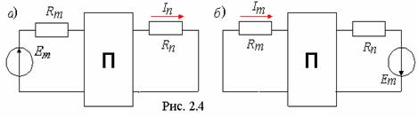

2.1.2.5.
Принцип взаимности
Принцип взаимности (обратимости) применим к пассивным (П) линейным электрическим цепям (рис. 2.4): если источник напряжения с ЭДС Em, включённый в m-ю ветвь, создаёт ток In в n-й ветви, то этот же источник ЭДС, включённый в n-ю ветвь, создаст ток Im в m-й ветви, равный току In, т. е. In=Im. Отметим, что принцип взаимности справедлив не только для токов, но и для напряжений ветвей. Воспользовавшись принципами взаимности и наложения, можно определить ток в одной ветви сложной цепи, в которой действует несколько источников напряжения и источников тока.
|